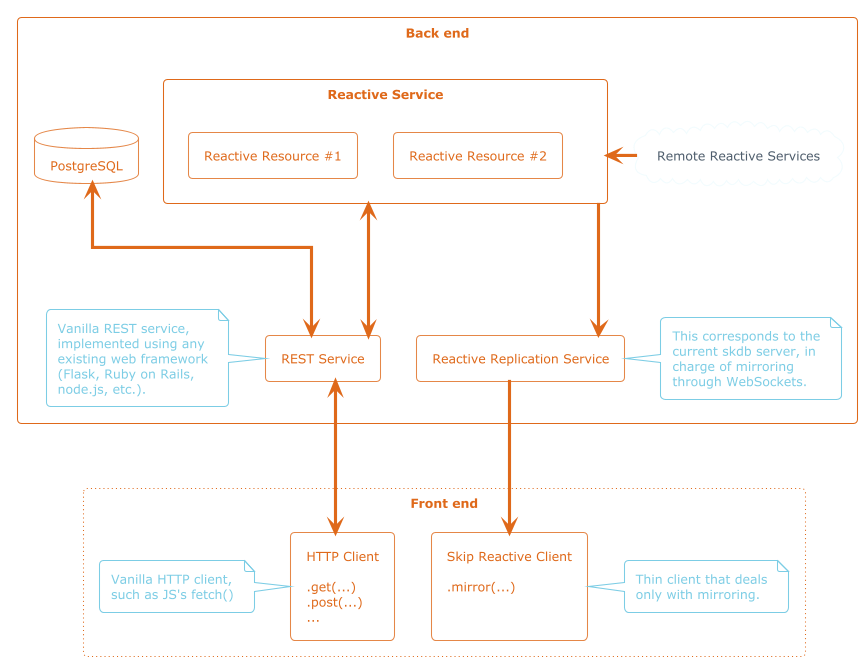
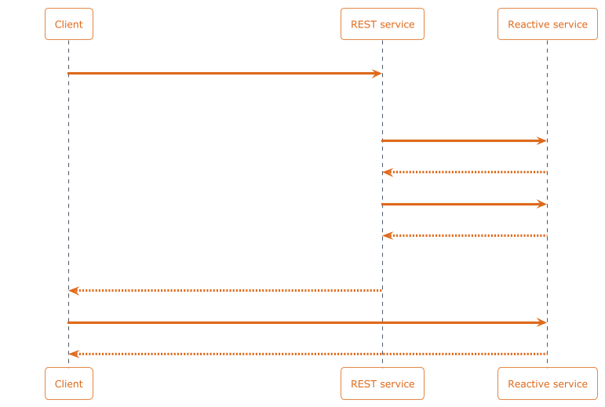

Reactive Services – Architecture
Table of Contents
1. Overview
This RFC aims to define an architecture for reactive services, along with their APIs.

A reactive service defines a compute graph made of skip runtime reactive collections, along with one or more reactive resources (analogous to REST resources), which are parameterized, dynamically generated, read-only, skip runtime reactive collections exposed to the outside world.
A reactive service is a back end component offering a low level API intended to be used by other back end components (such as regular REST services), rather than being directly exposed to the front end.
A reactive resources can be mirrored (through WebSocket) from by services as well as directly from clients.
Example:
A Twitter reactive service may expose the following reactive resources:
tweets(params:author_id),likes_per_tweet(params:tweet_id),likes_per_author(params:author_id).
A reactive service offers a minimal API to interact with reactive resources. This API is intended to be used by other back end components, such as a regular web frameworks1.
2. Mirroring Reactive Resources
In practice, a reactive resource is implemented by a TypeScript class responsible for dynamically generating a skip runtime reactive collection (using the provided parameters).
It is usually exposed through a separate REST service (implemented using any web framework), which orchestrates the instantiation of reactive resources.
Example2:

- A client sends a regular HTTP
GET /users/123/likesto the REST service. - The REST service handles the request:
- it invokes the reactive service's
create_reactive_request("likes_per_author", { author_id: 123 }), which returns a reactive request token (in practice, this is the name of a dynamically generated skip runtime collection), - it invokes the reactive service's
diff(reactive_request_id, 0), returning the current value along with the current tick, - it returns an HTTP 200 OK response, with the current value in the
response body, along with a special HTTP header:
X-Reactive-Request-Id: {reactive_request_id}:{init_tick}.
- it invokes the reactive service's
- The client uses the received data, and invokes the skip reactive
client's
mirror(reactive_request_id, init_tick, update_cb)to subscribe to subsequent updates3.
This means that an existing REST API can be kept as is, and made
reactive without hindering non-reactive clients (which would simply
ignore the X-Reactive-Request-Id HTTP response header), thus
permitting gradual introduction of reactivity in existing services.
3. The Write Path
Some of the skip runtime reactive collections defined by the reactive
service may be read-write input collections. On the write path,
the web framework simply invokes the reactive service's write() /
write_all() functions 4.
4. Low Level API
Reactive Services expose the following low level primitives (in
practice through a local server-side HTTP API, except for mirror()
which is handled through a WebSocket):
4.1. Reactive Resources
create_reactive_request(resource_name: string, params: Record<string, Object>): stringReturns a reactive request id (which is a dynamically generated collection name) that can be used with
mirror()to get reactive updates, or withread_all(req_id) / diff(req_id, prev_tick)to get current values.WebSocket
mirror(collection_name: string, init: (rows: Array<Object>): void, update: (added: Array<Object>, removed: Array<Object>): void)Mirrors the given collection, created using
create_reactive_request.
4.2. Reading
read(collection_name: string, key: TKey): Array<Object>Reads the value for a given key at the current tick.
read_all(collection_name: string): Map<TKey, Array<Object>>Reads the whole collection at the current tick.
diff(collection_name: string, prev_tick: int): (Map<TKey, Array<Object>>, int)Returns the diff between
prev_tickand the current tick, along with the current tick.
4.3. Writing
write(collection_name: string, key: TKey, value: Array<Object>)Sets the value for a given key.
write_all(collection_name: string, value: Map<TKey, Array<Object>>)Overwrites the whole collection.
Footnotes:
In other words, a reactive service does not deal with the
HTTP request/response cycle, but is instead invoked by a REST service
(for instance implemented using Flask, node.js, or Ruby on
Rails). This differs from the previous design where the reactive
service owned the HTTP request/response cycle, delegating to user
code by invoking the update() callback. That design had the downside
of making it difficult to leverage existing web frameworks for the
REST part.
This is just one possible way to use a reactive service. Developers may instead decide to create a reactive request only when explicitly requested. They may also choose not to respond with initial data, relying on mirroring for the entire sync.
The exact API of mirror regarding init data is still TBD.
Writing to a reactive service input collection isn't a substitute for writing into a regular database (such as PostgreSQL). In most cases, the write into the reactive service will happen after an actual write to a regular database.